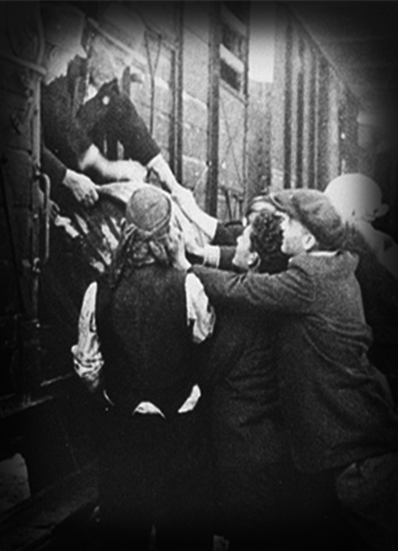
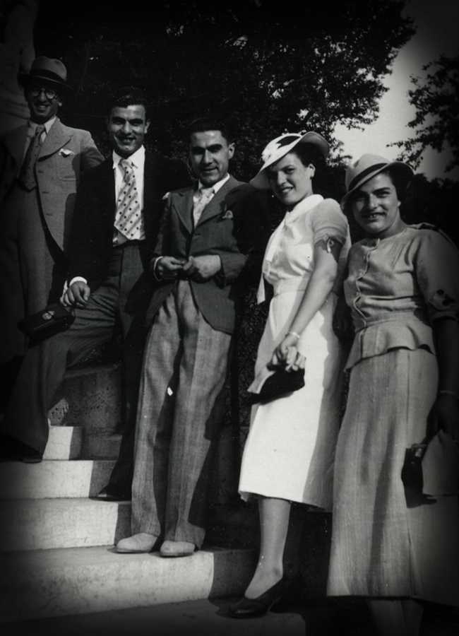

-
JAMILIA KOLONOMOS (1923 - 1956)
Portrait of Jamila Andjela Kolonomos, Victim that survived the Holocaust and lived to 2012.

-
Jamila Andjela Kolonomos was born in 1922 and raised in the Jewish community of Monastir (Bitola), a city in the province of Macedonia in the Kingdom of Yugoslavia. Jews had lived in Monastir for two thousand years, and at the turn of the twentieth century comprised 10 percent of the population. By 1931 the Jewish population had decreased to 3751, and to 3242 people by 1940, following a wave of emigrations.
 -
Jamila's father, Isak Kolonomos, was born in Monastir in 1893 to Djamila (nee Kasorla) and Kalef Kolonomos. Kalef had come to Monastir from Ioannina (Yannina), Greece with two brothers, Salamon and Mentesh, near the end of the nineteenth century. His family was Romaniote, Greek Jews whose origins date back to the Byzantine and Roman empires, and the family spoke Ladino along with Greek, French, Serbian, and Turkish. Jamila's mother was Esterina Fransez, who was from Skopje and spoke Ladino and Turkish.
 -
Isak and Esterina married in Skopje, where their first daughter, Bela was born in 1920. That same year, the family moved back to Monastir, and Isak began work at the Banque Franco-Serbe. He would continue to work there until 1941, and rise to the position of Director. While in Monastir Isak and Esterina would have four more children: Jamila (b. 1922), Kalef (b. 1925), Menahem (b. 1927), and Rachela (b. 1930). In the fall of 1940, Jamila's sister Bela was married to Moise Kassorla, and they moved to Skopje.

-
On April 6, 1941, the Germans entered Yugoslavia and Greece. Monastir was quickly occupied first by the Germans, then by the Bulgarians, and antisemitic laws were put into effect immediately. Jamila's brothers, Kalef and Menahem, were no longer permitted to attend school, and so began to learn office work. Jamila and her younger sister Rachela learned to sew, and cared for their ailing grandmother. During the first days of the German occupation, Isak was denounced by another bank employee to the German authorities, who forced him to open the bank safe and confiscated the money and documents inside.
-
Before the invasion Jamila, along with many of the Jewish youth in Monastir, had been a member of Hashomer Hatsair (The Young Guard). When the Communists organized the Yugoslav Resistance against Fascism, most Hashomer Hatsair members joined with them and contributed in a variety of ways--making shoes for the partisans, collecting arms discarded by the Yugoslav army, and forming small underground groups. In June 1941, Jamila herself formed three youth groups and one women's group.
-
By the winter of 1943, there were only a few armed units of the resistance, dispersed in small villages far from the cities. Communications were difficult, so many of the organized groups in Monastir and other cities who wished to join the partisans were unable to. As rumors began circulating that young Jewish men were soon to be deported to work in Bulgaria, one of the resistance leaders, Broche Milyovski, advised Jamila not to sleep at home for the next few days, and gave her an address where she could stay.